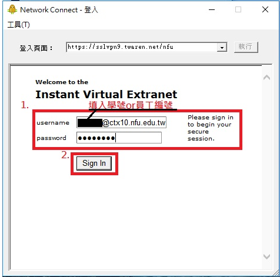

ROC Flag << Previous
ROC Flag << Previous
校園軟體下載
- 首次使用須先安裝SSL VPN 程式(Juniper Networks Connect) 請依您的作業系統版本下載使用者端程式https://drive.narlabs.org.tw/navigate/s/8F663EC143514CF295FCB53B5B228956GUY
-
"點選搜尋" > 輸入程式名稱為Network Connect> 點擊Network Connect
- 進行身份驗證(可由Juniper Network Connect或IE，請擇一進行身分認證) 執行程式後，於"登入頁面"輸入網址 : https://sslvpn9.twaren.net/nfu
- 輸入使用者帳號密碼，請填入校務行政AD帳號及密碼。請完整填寫您在校務行政AD帳號以及密碼，否則國網中心找不到對象進行身份確認
- 螢幕右下角顯示"已連接"，表示已成功連線

ROC Flag << Previous